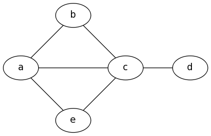
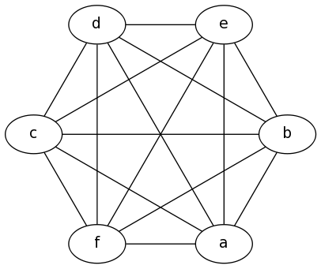
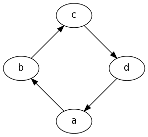
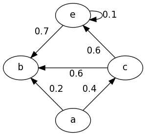
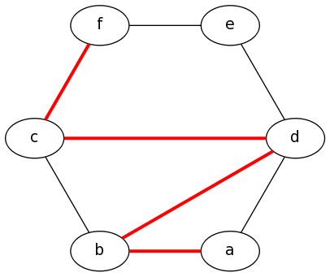
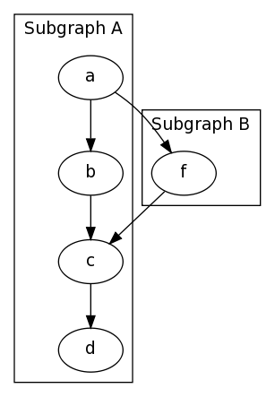
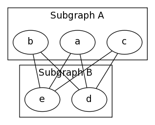
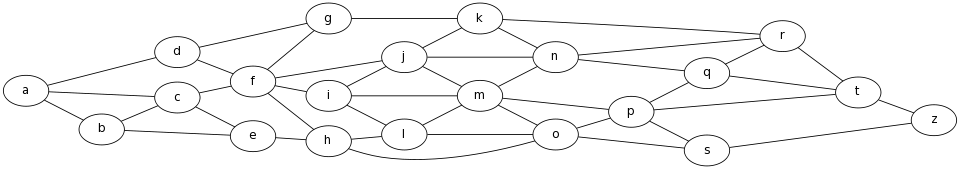
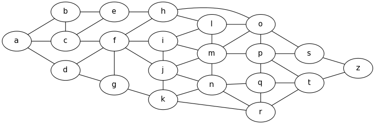

Examples
GraphViz uses the DOT language to describe graphs, Below are examples
of the language, with their resulting outputs.
Index
Example 1: Simple Graph
graph {
a -- b;
b -- c;
a -- c;
d -- c;
e -- c;
e -- a;
}

Example 2: K6
graph {
a -- b;
b -- c;
c -- d;
d -- e;
e -- f;
a -- f;
a -- c;
a -- d;
a -- e;
b -- d;
b -- e;
b -- f;
c -- e;
c -- f;
d -- f;
}

Example 3: Simple Digraph
digraph {
a -> b;
b -> c;
c -> d;
d -> a;
}

Example 4: Full Digraph
digraph {
a -> b[label="0.2",weight="0.2"];
a -> c[label="0.4",weight="0.4"];
c -> b[label="0.6",weight="0.6"];
c -> e[label="0.6",weight="0.6"];
e -> e[label="0.1",weight="0.1"];
e -> b[label="0.7",weight="0.7"];
}

Example 5: Showing A Path
graph {
a -- b[color=red,penwidth=3.0];
b -- c;
c -- d[color=red,penwidth=3.0];
d -- e;
e -- f;
a -- d;
b -- d[color=red,penwidth=3.0];
c -- f[color=red,penwidth=3.0];
}
Note that there's also a shorthand method as follows:
graph {
a -- b -- d -- c -- f[color=red,penwidth=3.0];
b -- c;
d -- e;
e -- f;
a -- d;
}

Example 6: Subgraphs
Please note there are some quirks here, First the name of the subgraphs are important, to be visually seperated they must
be prefixed with
Another Example of a Subgraph, In this example I group nodes together seperately from their edges, And also uses the graph attribute
cluster_ as shown below, and second only the DOT and FDP layout methods seem
to support subgraphs (See the graph generation page for more information on the layout methods)
digraph {
subgraph cluster_0 {
label="Subgraph A";
a -> b;
b -> c;
c -> d;
}
subgraph cluster_1 {
label="Subgraph B";
a -> f;
f -> c;
}
}
Another Example of a Subgraph, In this example I group nodes together seperately from their edges, And also uses the graph attribute
splines=line; to specify that edges should be drawn only as
straight lines, no curves allowed.
graph {
splines=line;
subgraph cluster_0 {
label="Subgraph A";
a; b; c
}
subgraph cluster_1 {
label="Subgraph B";
d; e;
}
a -- e;
a -- d;
b -- d;
b -- e;
c -- d;
c -- e;
}

Example 7: Large Graphs
To make it easier to input large graph descriptions, One may group edges together with a set of braces, It may also help to lay the graph out left to right instead of top to bottom. graph {
rankdir=LR; // Left to Right, instead of Top to Bottom
a -- { b c d };
b -- { c e };
c -- { e f };
d -- { f g };
e -- h;
f -- { h i j g };
g -- k;
h -- { o l };
i -- { l m j };
j -- { m n k };
k -- { n r };
l -- { o m };
m -- { o p n };
n -- { q r };
o -- { s p };
p -- { s t q };
q -- { t r };
r -- t;
s -- z;
t -- z;
}
Another feature that can make large graphs manageable is to group nodes together at the same rank, the graph above for example is copied from Assignment #2, Question #6, but doesn't look the same because of how the nodes are shifted around to fit in a more space optimal, but less logically simple way. We can make it look much more similar by grouping the nodes together for display as is done in the assignment with rank, as follows
graph {
rankdir=LR;
a -- { b c d }; b -- { c e }; c -- { e f }; d -- { f g }; e -- h;
f -- { h i j g }; g -- k; h -- { o l }; i -- { l m j }; j -- { m n k };
k -- { n r }; l -- { o m }; m -- { o p n }; n -- { q r };
o -- { s p }; p -- { s t q }; q -- { t r }; r -- t; s -- z; t -- z;
{ rank=same, b, c, d }
{ rank=same, e, f, g }
{ rank=same, h, i, j, k }
{ rank=same, l, m, n }
{ rank=same, o, p, q, r }
{ rank=same, s, t }
}
